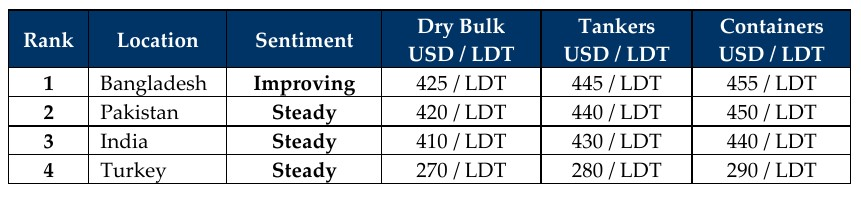

inWeekly Demolition Reports24/02/2026

International market turmoil from the direct / indirect imposition of global tariffs and related actions by Donnie Dementiasaw a crazy Week 8 wind up in 2026, as freight rates and oil prices both moved up and subsequently reconsidered their moves, retracing their steps before the week ended. The U.S. Dollar and local steel plate prices reformulated their individual strategies as they returned mixed results of their own across the various sub-continent destinations — all in the midst of rising inflation in a confusion-laden ship recycling industry. To start, let’s paint a clearer picture of the international state of affairs as of January 2026, with key inflation figures from Trump’s wrap-up of his year one “presidency.” U.S. inflationary figures (un?)surprisingly fell to 2.4% (from 2.7% in both of the preceding months), even as the cost of living rises and the populace responsible for the performance of the economy collectively tightens their purse strings. Turkey’s figures for last month followed suit in the path of U.S. numbers, while Indian, Pakistani, and Bangladeshi figures all rose in unison.
As oil rose above USD 63/barrel from last week to well over USD 66/barrel this week, it retreated back down to USD 65.93/barrel by week’s end, amid investors and forecasters increasingly weighing the deranged possibility of Donnie Silver Spoon launching another confounding attack against Iran, in an ongoing effort to distract from the JE files (having failed with his bid involving President Maduro’s kidnapping just last month), and still failing. The Baltic Exchange’s Dry Bulk Index, meanwhile, snapped a three-day losing streak by the end of the week and climbed a healthy 1.2% on the back of Capes (which rebounded a healthy 1.7%) and Panamaxes (which rose 1.2%), despite Supras easing by 1 point. All of the above showed a different face in the ship recycling markets, as local anchorages were relatively stacked this week, with a collective 151K LDT via 16 vessels that arrived and were delivered across India, Bangladesh, and Pakistan — a truly welcome change for the industry.
Chinese New Year holidays also came this week and, while an anticipated drop in the supply of potential tonnage remains omnipresent and was expected to spell further doom for sub-continent ship recycling markets after an altogether dull start to the year, this week’s reported local anchorages did seem to turn the tables on that. Prices, meanwhile, seem to be confoundingly moving up again toward the mid-USD 400s/LDT for select, good-condition vessels, spurred on by a positive election in Bangladesh, an apparent halt to cheap Iranian steel imports in Pakistan, and India still reining in tonnage despite being on shaky ground. The HKC landscape and required documentation are also becoming much clearer, as the Association in Bangladesh will now adhere to the processes in place in both Gadani and Alang, whereby IRRCs (International Readiness for Recycling Certificates) will now be required on incoming vessels. Finally, the Holy Month of Ramadan is now upon us, meaning official working hours are likely to be reduced before the breaking of fast in the evenings. It seems like a slow fortnight (or more) may be upon us.
For Week 8 of 2026, GMS Market Rankings / vessel indications are as below.

📄 Download PDF: Ship-recycling-market-insight-Week-08-02-20-2026-Raging_Hangover.pdfSource: GMS,Inc.https://www.gmsinc.net/gms_new/index.php/web